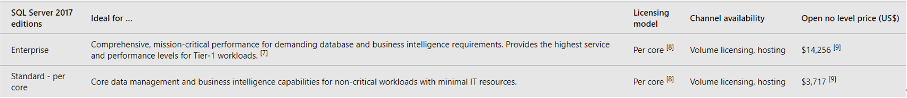

Detailed Description
Aims
This is an online travel software. The reason we want to make this software is that we want to help users travel, make friends and chat at home. During the COVID-19 epidemic, lockdown not only blocked the virus but also greatly affected people's social interaction. People stay at home, it is hard to make new friends, and they cannot see the scenery around. People can only stay at home and use traditional social software to make friends or watch photos outside, but traditional social software cannot meet the real travel simulation, so we have this software. We hope that through this kind of friend-making software that simulates real travel, people will be able to catch up with new friends and enjoy the scenery around them when they are blocked or hard to travel. If we want to implement it, we need to understand a lot of technologies, like 3ds Max, Unity, laser point cloud technology and database technology. And we can use 3ds Max to build simulation roles for users. We must collect a data set which is the data points of each city can be obtained through the shooting of the acquisition vehicle, these data points correspond to the coordinates, height and distribution of buildings in the city(This requires ‘laser point cloud technology’ support). Then we can use these data set to establish a 1:1 3D model in the virtual space just like the Sandbox Game (through Unity). When users can normally use the software to travel online, we need to develop new features or functions to keep old customers and attract new ones, we will be developing some user interaction functions through AR technology. For example, through AR technology, the historical stories and records of current scenic spots are provided for each user in real time. And users can shop in the online stores of merchants, users can view product details through AR technology and our software provide links to each product. In this project, the most important thing is to establish a 1:1 3D model in the virtual space according to data sets we collected. Because this is our main function and selling point, if we want users to travel online through our software, we must meet the needs of customers and let them see the scenery they want to see. If we have only enough time or resources for one of our goals, we want to collect data sets from all cities which include the coordinates, height and distribution of buildings and roads. If possible, we hope to collect more data sets, such as canyons, mountains, and plains.
Plans and Progress
Roles
Our software is a game-based dating software. For our project, we have a clear division of labor and corresponding roles. In our five-person team, there are lead developer, designers, programmers, art designers and testers. Our lead developer is Xinyu Chen. He has good leader skills and have good communication skills which can lead our team on the right track. He is responsible for overseeing the work of the software engineer team working on the project, needs to improve the development process of this game and provide technical solutions. Zehua Tong is the designer of the project. Responsible for the conception and design of software rules and structure. He integrated everyone's ideas into one piece of software. He had a very clear concept of our game based social software, and he added everyone's ideas. Jiaqi Li is the programmer of this software, mainly developing games software. He needs to write scripts to develop and maintain advanced command systems for various software tasks. There is also game engine programming, including simulation of physics, collisions, object movement, etc. Then Meng Wang is a tester, and game testers analyze video games to record software defects as part of quality control. Testing is a highly technical field that requires computer expertise and analytical capabilities. She is delicate in mind and has sufficient knowledge of computer knowledge. Xiaodan Qiu is an art designer. She graduated from art school and has painting experience. This character is a visual artist who creates video game art. In our software, 3D simulation technology and digital software are needed to create characters and environments, such as buildings, weapons, and vehicles.
Scope and Limits
There are two scopes for the online travel function, one is the map scope and the other is the material scope. The map of the entire earth is huge and changing weather and uncertain factors are also a problem. Therefore, we need to define the scope of the project and lay the foundation for the phenomenon of `scope creep'.
Limits
You can do many things in the program, but this does not mean that the user can do whatever they want in it. Porn and violent content are not allowed. In order to build a harmonious environment, we hope to bring users a different way of socializing and a relaxing travel process.
Map
The map scope can start from Melbourne. In addition, we will give priority to making virtual 3D models for popular cities and attractions. We make it according to the popularity of each attraction, so that there will be a market for good users. The map scope will get bigger and bigger, from Melbourne to Victoria state, to the whole of Australia or Oceania.
Material
When users enter different areas, they will trigger different environmental impacts, simulating different climates and weather, including heavy rain, drought, desert, and snow. When users enter different areas, they will trigger different environmental impacts, simulating different climates and weather, including heavy rain, drought, desert, and snow. Weather is very important during tourism. It is difficult for people to see the stars on a dark clouded night, and the rainbow is also after wind and rain.
Climate elements such as sunlight, wind and rain can be simulated, but we can only provide users with some appropriate experience in extreme weather. Our purpose is to help users relax through simulated travel. The adventure function is not available.
Including all kinds of robots, monsters, cute animals. Users can also upload self-made mods to the community for others to use. Your appearance in the program may be like your business card, you can look cute and beautiful or cool and handsome, you can also look fierce.
Tools and Technologies
software or other tools:
get the three-dimensional data of the city street
Basic software architecture
All 3D image design, AR design
Program online server
Provide online cloud services
Technology:
point cloud is a database containing points in the three-dimensional coordinate system. However, from the typical workflow perspective, the only important thing is, that point cloud is a very accurate digital record of an object or
space. It is saved in form of a very large number of points that cover surfaces of a sensed object.（GRZEGORZ CIĘPKA 2016 cite
Through computer graphics, we can record the data collected by the collection vehicle as a data format, and store it in the database, and at the same time can call it at any time. This technology is very important for the storage of our image information and the construction of online models.
The full name of AR technology is Augmented Reality, which is a very popular and popular new technology in recent years. AR uses multimedia three-dimensional modeling, real-time tracking, intelligent interaction and other means to enable the generated virtual simulation information to interact with information in reality, thereby enhancing reality. This can greatly improve the immersive experience of our social map application.
Testing
Our products are designed to help people meet their social needs when it is inconvenient to travel or when they are unwilling to go out. Therefore, online social experience and simulated travel are the main activities of the project. Our products are for users of all ages because any age has social needs. What we should test is how users feel about the main functions of our products, such as the comfort of online travel and social experience. Therefore, we planned the following tests.
Testing Group
| Target User | Background |
|---|---|
| Teenager (12~24) | Usually the frequency of teenagers using electronic devices is the highest among the left and right study population. Teenagers' demand for making friends and games is the greatest among all groups. At the same time, young people have the most available time. |
| Adult(24~36) | Usually adults are usually busy with work and life, so they are not very rich in free time. But on the other hand, the life circle of adults is not as large as that of teenagers (campus), fixed jobs and few personnel changes make adults have a high level of social needs. |
| Middle-aged and elderly (41+) | Users of this age will not spend too much time, they have certain online social needs, but will not put too much energy on such mobile applications. |
Testing indicators:
Number of testing users: 400 To be defined as a reasonable user testing, approximately the number of testing users we will need is 400.
Satisfaction degree: over 75% To be defined as a successful product, over 75% positive responses from the user testing are expected.
Timeframe
The following timetable is based on all the activities that we have finished. Group 10 think we will be work together as a team in the future.
Alternate
| NO. | Event & Mission | Duty |
|---|---|---|
| 1 | Held a team brain storm and decided the main idea of team program. | ALL |
| 2 | Conceived outline and separated to each people. | ALL |
| 3 | Organized group work, analyzed and discuss problems, putted forward the proposal, as well as commented on work. | ALL |
| 4 | Analyzed and discuss problems that we faced in the paper work. (Eg. Meng Wang pushed out a question about whether the content of her part was against other teammates. ) | Hold by Chen |
| 5 | Integrated the draft and tried to find potential problems. | All (Mainly for Chen) |
| 6 | Finished all paper work, highlighted all the tools and technology that we need and tried to realize the app. | ALL |
| 7 | To learn relevant techniques and be familiar with tools. | Tong, Li, Chen |
| 8 | To hole a brainstorm again to add new functions to the app. | All |
| 9 | To plan trips for collecting data in order to collect database. | Qiu, Wang |
| 10 | To carry out network data collection, in order to reduce the pressure of subsequent data collection. | Qiu, Wang |
| 11 | To collate the data that we collected by the tools. | ALL |
| 12 | We arrange two and a half weeks for data collation because the data was huge. | ALL |
| 13 | To establish the virtual space of app, and finish the work of data sorting | ALL |
| 14 | Further optimizing and rationalizing the app | ALL |
| 15 | To design UI layout, add more humanized design | ALL |
| 16 | To run the app for testing and debug the APP | ALL |
Risks
Unordered
- The game capacity is too large
- Server congestion
- Not compatible with both platforms
This software includes online travel, VR, making friends and electronic map. Too many factors lead to the software capacity being too large. If the mobile phone memory is not enough, the download will not be successful, and the player will not be able to experience the software perfectly.
This software is to make friends and play with people in the form of map tourism, which means that people all over the world can play. If there are too many online users, such as some activities, the server will be full, unable to carry too many people, leading to the need to queue into the server. This will cause users' dissatisfaction.
This software is provided to IOS users and Android users, but the users of the two platforms cannot communicate with each other, which means that IOS users can't meet Android users, so players can't play with their good friends on the other platform. This is not conducive to the emotional connection between players and friends.
Group processes and communications
Communication is a profound art. One third of the world's people lose their jobs because they are incompetent, and two thirds because they cannot get along with others successfully. Failure and misunderstanding due to communication can be devastating to the team. The communication mode of Group 10 is very relaxing. In Goup10, there were all Chinese people, so we chose the most iron and Chinese chat software to cooperate with the use of MC Team. So as to prevent members from missing out on important information. Because WeChat is used in conjunction with the MC Team, Group 10 has an excellent Team atmosphere. We talked like friends we had known for a long time. In the discussion of learning, everyone will seriously and actively put forward new ideas and new ideas. Group10 regular team meetings. However, when we encounter difficulties, we will discuss them in group chat and solve them timely. If not, we will organize additional meetings for online discussion, and the meeting time is agreed by everyone. We will use the MC Team's meeting capabilities to assist us such as voice call, video call, screen share and so on. Usually we have a regular meeting every week. If someone does not arrive, we will use the WeChat phone to find out the situation. We also have detailed minutes for the team to read if they need time off.